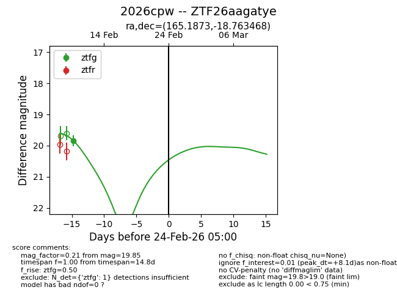
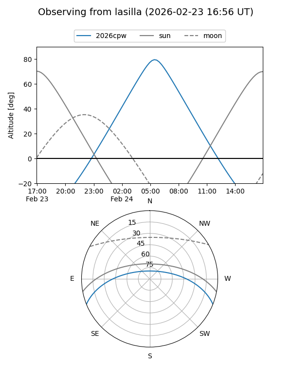
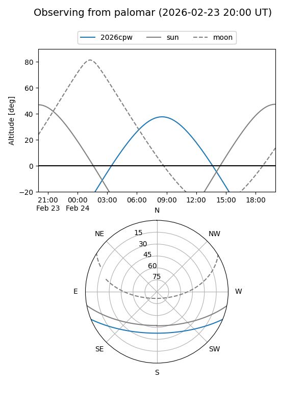

2026cpw
Target 2026cpw at 2026-02-24 09:08
Aliases and brokers:
FINK: link
Lasair: link
ALeRCE: link
TNS: link
YSE: link
alt names
ZTF26aagatye (ztf,fink_ztf)
2026cpw (tns,yse)
Coordinates:
equatorial (ra, dec) = 165.1873,-18.76347
equatorial (HMS+DMS) = 11:00:44.94,-18:45:48.49
galactic (l, b) = (269.6011,+36.84332)
Flags:
Photometry:
last ztfg=19.85
1 ztfg detections
Lightcurve

Visibility


Additional plots